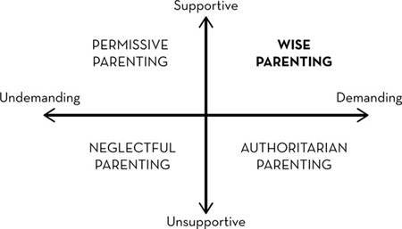

Chapter 10 Chapter 10
Chapter 10 Chapter 10What can I do to encourage grit in the people I care for?
I’m asked this question at least once a day.
Sometimes it’s a coach who asks; sometimes it’s an entrepreneur or a CEO. Last week, it was a fourth-grade teacher, and the week before, a math professor at a community college. I’ve had army generals and navy admirals toss me this question, too, but most often it’s a mother or father who worries that their child isn’t close to realizing their potential.
All the people quizzing me are thinking as parents would, of course—even if they’re not parents. The word parenting derives from Latin and means “to bring forth.” You’re acting in a parentlike way if you’re asking for guidance on how to best bring forth interest, practice, purpose, and hope in the people you care for.
When I turn the tables and ask people for their own intuitions on how to “parent for grit,” I get different answers.
Some believe grit is forged in the crucible of adversity. Others are quick to paraphrase Nietzsche: “What doesn’t kill you makes you stronger.”I Such invocations conjure an image of scowling mothers and fathers dispensing endless criticism on the sidelines of games that had better be victories, or chaining their children to the piano bench or violin stand, or grounding them for the sin of an A–.
This perspective assumes that offering loving support and demanding high standards are two ends of a continuum, with the authoritarian parents of the gritty far to the right of center.
Had I been around to seek opinions a century ago, such would have been the perspective of John Watson, then chair of psychology at Johns Hopkins University.
In his best-selling 1928 parenting guide, Psychological Care of Infant and Child, Watson holds forth on how to raise a child “who loses himself in work and play, who quickly learns to overcome the small difficulties in his environment . . . and who finally enters manhood so bulwarked with stable work and emotional habits that no adversity can quite overwhelm him.”
Here’s Watson’s advice: “Never hug and kiss them. Never let them sit in your lap. If you must, kiss them once on the forehead when they say good night. Shake hands with them in the morning. Give them a pat on the head if they have made an extraordinarily good job of a difficult task.” Watson further recommends letting children cope with problems on their own “almost from the moment of birth,” rotating different caregivers to prevent unhealthy attachment to any one adult, and otherwise avoiding the coddling affection that prevents a child from “conquering the world.”
Occasionally, of course, people take the opposite stance.
They’re convinced that perseverance and especially passion bloom when children are lavished with unconditional affection and support. These champions of kinder and gentler parenting advocate big hugs and long leashes and point out that children are by their nature challenge-seeking creatures whose innate desire for competence needs only our unconditional love and affection to reveal itself. Once unfettered by the demands of imperious parents, children will follow their own intrinsic interests, and disciplined practice and resilience in the face of setbacks will follow.
On the continuum between supportive and demanding parenting, proponents of this permissive “child-centered” approach fall to the left of center.
So which is it? Is grit forged in the crucible of unrelentingly high standards or is it nurtured in the warm embrace of loving support?
As a scientist, I’m tempted to answer that we need more research on the topic. There’s a lot of research on parenting, and some research on grit, but no research yet on parenting and grit.
But as a mother of two teenagers, I don’t have time for all the data to come in. Like the parents asking me this question, I have to make decisions today. My girls are growing up, and each day of their lives, my husband and I are parenting them, for better or for worse. What’s more, as a professor and a lab director, I interact with dozens of young people—and I’d like to encourage their grit, too.
So, as a step toward resolving the debate, I’ve probed the evidence for each side. An advocate of old-fashioned, strict parenting suggested I talk to grit paragon Steve Young, the record-breaking quarterback whose Mormon upbringing included a daily paper route, Bible classes before school, and absolutely no cussing or drinking. Meanwhile, an advocate with a more liberal bent pointed me toward Francesca Martinez, the outspoken British stand-up comic whose writer father and environmentalist mother allowed her to drop out of school when she was sixteen and didn’t bat an eye when she titled her memoir What the **** Is Normal?!
The legendary quarterback of the San Francisco 49ers was twice named Most Valuable Player in the National Football League. And he was selected Most Valuable Player of Super Bowl XXIX, during which he completed a record-breaking six touchdown passes. At retirement, he was the highest-rated quarterback in NFL history.
“My parents were my foundation,” Steve has said. “Good parenting is something I wish everyone could have.”
Here’s a story to illustrate his point.
Though Steve had been the star of his high school football team and was heavily recruited by colleges across the country, he entered Brigham Young University as their eighth-string quarterback. Since seven other quarterbacks stood between Steve and playing time, his coach relegated him to the “hamburger squad”—a unit composed of the least valuable players whose primary role was to run plays so the BYU defensive line could practice.
“Man, I wanted to go home,” Steve recalled. “I went to school my whole first semester with my bags packed. . . . I remember calling [my dad] and just saying, ‘Coaches don’t know my name. I’m just a big tackling dummy for the defense. Dad, it’s horrible. And this is just not what I expected . . . and I think I’d like to come home.’ ”
Steve’s father, whom Steve describes as “the ultimate tough guy,” told him: “You can quit. . . . But you can’t come home because I’m not going to live with a quitter. You’ve known that since you were a kid. You’re not coming back here.” Steve stayed.
All season, Steve was first to practice and last to leave. After the team’s last game, he stepped up his private workouts: “There was a huge net hanging at the far end of the field house. I squatted behind an imaginary center; took the snap; did the three-step drop, and threw into the net. From the beginning of January to the end of February, I threw over 10,000 spirals. My arm hurt. But I wanted to be a quarterback.”
By sophomore year, Steve moved up from number-eight quarterback to number two. By his junior year, he was BYU’s starting quarterback. In his senior year, Steve received the Davey O’Brien award for the most outstanding quarterback in the country.
There were several other times in his athletic career when his confidence faltered. Each time, he wanted desperately to quit. Each time, he appealed to his father—who wouldn’t let him.
One early challenge came while playing baseball in middle school. “I was thirteen,” Steve recalled. “I didn’t get a hit the whole year, and it just got more and more embarrassing. . . . Game after game, I couldn’t get a hit.” When the season ended, Steve informed his dad that he’d had it. “My dad looked me straight in the eye and said, ‘You cannot quit. You have the ability, so you need to go back and work this out.’ ” So Steve and his dad went back to the field. “I remember it being really cold and miserable and rainy and sleet and snow, and he’d be pitching the ball and I’d be hitting them.” By his senior year in high school, as captain of the varsity baseball team, Steve was batting .384.
The lesson that persistence eventually delivers rewards was one on which Steve relied in the four years he sat on the bench with the San Francisco 49ers. Rather than request a trade, Steve apprenticed himself to Joe Montana, the starting quarterback who captained the team to four Super Bowl victories. “If I was ever going to find out just how good I could get, I needed to stay in San Francisco and learn, even if it was brutally hard to do. . . . I many times thought about quitting. . . . I heard boos during my sleepless nights, but I feared calling my dad. I knew what he’d say: ‘Endure to the end, Steve.’ ”
At this point in my narrative of Steve Young’s improbable ascent, you might conclude that parents of gritty children are authoritarian. You might leap to the conclusion that they’re centered on their own standards and fairly insensitive to their children’s particular needs.
Before you issue a final verdict, though, sit down with Steve’s parents, Sherry and LeGrande Young. And before you do, take note that LeGrande prefers the childhood nickname that aptly captures his approach to life: “Grit.” “He’s all about hard work and being tough and not whining,” Steve’s brother Mike once said of his father. “The name really fits him.”
As a corporate attorney, Grit Young seldom missed a day of work. About twenty-five years ago, Grit was working out at his local YMCA when a fellow gym-goer challenged him to an ongoing sit-up competition. After a year, each man could do about a thousand sit-ups each, at which point the challenger bowed out. By then, Grit was competing against himself. He kept on, for years, until he could do ten thousand sit-ups in a row.
When I called to talk to Steve’s parents about their famous son and the way they’d raised him, I expected sternness and formality. The first thing Sherry said was “We’re delighted to talk to you! Our Steve is a great kid!” Grit then joked that, given my chosen field of study, he was surprised it had taken me so long to get to them.
My shoulders softened a bit, and I sat back as each told me how they’d learned to work hard early in life. “We were one generation off the farm,” Sherry explained. “There were expectations.” Sherry was picking cherries by age ten. Grit did the same, and to earn money for baseball mitts and clothes, he mowed lawns, delivered newspapers on his bike to houses miles apart, and picked up whatever farm work he could.
When it came time to raise their children, both Sherry and Grit very deliberately set out to provide the same challenges. “My goal was to teach them discipline,” Grit said, “and to go at things hard like I learned to do. You have to learn those things. They don’t just happen. It was important to me to teach the kids to finish what you begin.”
In no uncertain terms, Steve and his siblings were made to understand that, whatever they signed up for, they had to see it through to the end. “We told them, you’ve got to go to all the practices. You can’t say, ‘Oh, I’m tired of this.’ Once you commit, you discipline yourself to do it. There’s going to be times you don’t want to go, but you’ve got to go.”
Sounds strict, right? It was. But if you listen closely, you’ll discover that the Youngs were also tremendously supportive.
Steve tells the story of getting tackled playing Pop Warner football as a nine-year-old and looking up to see his mom, still carrying her purse, striding right past him to grab a boy on the opposing team by the shoulder pads to tell him that he would not be illegally neck tackling Steve again. As Steve and his siblings got older, their home became a favorite hangout. “Our basement was always filled with kids,” Sherry says.
As a corporate attorney, Grit traveled often. “Most guys I knew would stay for the weekend, wherever we were, because you wouldn’t be finished with your business on Friday, and you had to start again on Monday. Not me. I always, always did everything I could to get home for the weekend.” Occasionally, weekend trips home were also demonstrations of the character that had earned Grit his nickname: “Once I was in Montana negotiating with an aluminum plant. Friday night, I take a taxi down to the airport, and it’s all fogged in. All the flights were canceled.”
I considered what I might do in the same situation, and then blushed a bit as I listened to the rest of the story. Grit rented a car, drove to Spokane, took a flight to Seattle, then a second flight to San Francisco, and finally a third flight—a red-eye that arrived at JFK the next morning at dawn. He then got in another rental car and drove back to Greenwich, Connecticut. “I’m not patting myself on the back,” Grit said. “It’s just that I thought it was important to be with the kids, to support them, whether it was athletic activities or anything else.”
Sherry and Grit were also attuned to their children’s emotional needs. Steve, for example, was especially anxious. “We noticed there were things he wouldn’t do,” Grit said. “When he was in second grade, he refused to go to school. When he was twelve, he wouldn’t go to Boy Scout camp. He never slept over at another kid’s house. He just wouldn’t do it.”
It was hard for me to square the image of Steve Young, fearless all-star quarterback, with the timid boy Sherry and Grit were describing. Likewise, neither Sherry nor Grit had any idea what to make of their oldest son’s fearfulness. One time, Grit says, he went to pick up Steve from school to take him to his uncle and aunt’s house for the day, and Steve simply couldn’t stop sobbing. He was petrified to be away from his own home. Grit was flabbergasted. I waited to hear how he and Sherry reacted. Did they tell their son to man up? Did they remove some of his privileges?
No and no. Grit’s description of the talk he had with his son when Steve refused to go to school makes it clear Grit did more questioning and listening than lecturing and criticizing: “I said, ‘Well, is somebody picking on you?’ He says, ‘No.’ Do you like your teacher? ‘I love my teacher.’ Well, why don’t you go to school? ‘I don’t know. I just don’t want to go to school.’ ”
Sherry ended up sitting in Steve’s second-grade classroom for weeks until, at long last, Steve felt comfortable going to school by himself.
“It was separation anxiety,” Sherry told me. “At the time, we didn’t know what to call it. But we could tell he was all tight inside, and we knew that he needed to work through all that.”
Later, when I asked Steve to elaborate on his first troubled semester at BYU, I pointed out that, if someone heard only that anecdote and nothing else, they might conclude that his father, Grit, was a tyrant. What kind of parent could refuse a son his plea to return home?
“Okay,” Steve said. “All right. Everything is contextual, right?”
I listened.
“The context was that my dad knew me. He knew all I wanted to do was sprint home, and he knew that if he let me do that, it would be letting me give into my fears.
“It was a loving act,” Steve concluded. “It was tough, but it was loving.”
But it’s a fine line between tough love and bullying, isn’t it? What’s the difference?
“I knew the decision was mine,” Steve said. “And I knew my dad didn’t want me to be him. Number one, a parent needs to set a stage that proves to the child, ‘I’m not trying to just have you do what I say, control you, make you be like me, make you do what I did, ask you to make up for what I didn’t do.’ My dad showed me early that it wasn’t about him and what he needed. It truly was ‘I’m giving you all I got.’
“There was an underlying selflessness to the tough love,” Steve continued. “I think that’s vital. If any of the tough love is about the parent just trying to control you, well, kids smell it out. In every way possible, I knew my parents were saying, ‘We’re looking to see your success. We’ve left ourselves behind.’ ”
If getting to know the Youngs helps you understand that “tough love” isn’t necessarily a contradiction in terms, hold that thought—and meet Francesca Martinez and her parents, Tina and Alex.
Named by the Observer as one of the funniest comics in Britain, Francesca performs to sold-out audiences around the world. In a typical routine, she breaks the no-cussing rule of the Young family, and after the show, she’s sure to violate the drinking prohibition. Like her parents, Francesca is a lifelong vegetarian, not religious, and politically, somewhere to the left of progressive.
Francesca was diagnosed with cerebral palsy at age two. She prefers the term “wobbly.” Told that their brain-damaged daughter would “never lead a normal life,” Tina and Alex quickly decided that no doctor could foretell who their daughter might become. Achieving comedic stardom takes grit no matter who you are, but perhaps more so when it’s a challenge merely to enunciate your consonants or walk to the stage. So, like other aspiring comics, Francesca has endured four-hour drives (each way) to perform for ten minutes for no pay and made countless cold calls to impassive and busy television producers. But unlike most of her peers, she needs to do breathing and voice exercises before each show.
“I don’t take credit for my hard work and passion,” she told me. “I think these qualities came from my family, which was very loving and very stable. Their overwhelming support and positivity are why there is no limit to my ambition.”
Not surprisingly, counselors at Francesca’s school were doubtful of entertainment as a career path for a girl who struggled to walk and talk at a normal cadence. They were even more wary of her dropping out of high school to do so. “Oh, Francesca,” they’d say with a sigh, “think about something more sensible. Like computers.” The thought of an office job was about as horrible a fate as Francesca could imagine. She asked her parents what she should do.
“Go and follow your dreams,” Alex told his daughter, “and if they don’t work out, then you can reassess.”
“My mum was just as encouraging,” Francesca said. Then, with a smile: “Basically, they were happy for me to leave formal education at sixteen to act on television. They let me spend my weekends clubbing with friends, surrounded by leery men and cocktails with sexually explicit names.”
I asked Alex about his “follow your dream” advice. Before explaining, he reminded me that Francesca’s brother Raoul was also allowed to drop out of high school—to apprentice himself to a renowned portrait painter. “We never put pressure on either of them to become doctors or lawyers or anything like that. I truly believe that when you do something you really want to do, it becomes a vocation. Francesca and her brother are incredibly hard workers, but they feel passionately about their subjects, so to them it’s not at all oppressive.”
Tina agreed entirely: “I’ve always had an instinctive sense that life and nature and evolution have planted in children their own capabilities—their own destiny. Like a plant, if they’re fed and watered in the right way, they will grow up beautiful and strong. It’s just a question of creating the right environment—a soil that is nurturing, that is listening and responsive to their needs. Children carry within them the seeds of their own future. Their own interests will emerge if we trust them.”
Francesca connects the unconditional support that her “absurdly cool” parents lavished on her to the hope she maintained even when hope seemed lost: “So much of sticking with things is believing you can do it. That belief comes from self-worth. And that comes from how others have made us feel in our lives.”
So far, Alex and Tina seem the epitome of permissive parenting. I asked them whether they see themselves as such.
“Actually,” Alex said, “I think I’m allergic to spoiled children. Children must be loved and accepted, but then, without complications, they need to be taught: ‘No, you cannot hit your sister on the head with that stick. Yes, you must share. No, you don’t get to have everything you want when you want it.’ It’s no-nonsense parenting.”
As an example, Alex pushed Francesca to do the physical therapy exercises prescribed by her doctors. She hated them. For years, she and her father battled. Francesca couldn’t understand why she couldn’t simply work around her limitations, and Alex believed his responsibility was to stand firm. As she says in her book: “Though happy in many ways, the next few years were punctuated with intense rows replete with door-banging and tears and the throwing of objects.”
Whether these skirmishes could have been handled more skillfully is an open question—Alex believes he could have done a better job explaining to his young daughter why he was so insistent. That may be so, but what really strikes me about this aspect of Francesca’s childhood is the notion that an affectionate, follow-your-dreams parent can nevertheless feel compelled to lay down the law on matters of discipline. Suddenly, the one-dimensional view of Alex and Tina as hippy-dippy parents seems incomplete.
It was telling, for example, to hear Alex, who is a writer, talk about the work ethic he modeled for his children: “To finish things, you have to put the work in. When I was younger, I’d meet many people who were writing stuff. They’d say to me, ‘Oh yeah, I am a writer as well but I’ve never finished anything.’ Well, in that case, you are not a writer. You are just somebody who sits down and writes things on a bit of paper. If you’ve got something to say, go ahead and say it and finish it.”
Tina agrees that as much as children need freedom, they also need limits. She’s a tutor as well as an environmental activist, and she’s watched a lot of parents engage in what she calls begging-and-pleading negotiations with their children. “We taught our children to live by clear principles and moral guidelines,” she said. “We explained our reasoning, but they always knew where the boundaries were.
“And there was no television,” she added. “I felt it was a hypnotic medium, and I didn’t want it to replace interactions with people. So we simply didn’t have a television. If the children wanted to watch something special, they would walk over to their grandparents’.”
What can we learn from the stories of Steve Young and Francesca Martinez? And what can we glean from how other grit paragons describe their parents?
In fact, I’ve noticed a pattern. For those of us who want to parent for grit, the pattern is a helpful blueprint, a guide for making the many decisions we must grapple with while raising our children.
Before I say more, let me repeat the caveat that, as a scientist, I’d like to collect many more data points before coming to firm conclusions. In a decade, I should know a lot more about parenting for grit than I do now. But because there’s no pause button for parenting the people we care about, I’ll go ahead and tell you my hunches. In large part, I’m encouraged to do so because the pattern I’ve observed matches up with dozens of carefully executed research studies on parenting (but not grit). The pattern also makes sense, given what’s been learned about human motivation since John Watson dispensed his Don’t Coddle ’em advice. And, finally, the pattern I see matches up with the interviews of world-class athletes, artists, and scholars completed by psychologist Benjamin Bloom and his team thirty years ago. Though parenting was not the explicit focus of the Bloom study—parents were originally included as “observers to verify” biographical details—the importance of parenting ended up as one of its major conclusions.
Here is what I see.
First and foremost, there’s no either/or trade-off between supportive parenting and demanding parenting. It’s a common misunderstanding to think of “tough love” as a carefully struck balance between affection and respect on the one hand, and firmly enforced expectations on the other. In actuality, there’s no reason you can’t do both. Very clearly, this is exactly what the parents of Steve Young and Francesca Martinez did. The Youngs were tough, but they were also loving. The Martinezes were loving, but they were also tough. Both families were “child-centered” in the sense that they clearly put their children’s interests first, but neither family felt that children were always the better judge of what to do, how hard to work, and when to give up on things.
Below is a figure representing how many psychologists now categorize parenting styles. Instead of one continuum, there are two. In the upper right-hand quadrant are parents who are both demanding and supportive. The technical term is “authoritative parenting,” which, unfortunately is easily confused with “authoritarian parenting.” To avoid such confusion, I’ll refer to authoritative parenting as wise parenting, because parents in this quadrant are accurate judges of the psychological needs of their children. They appreciate that children need love, limits, and latitude to reach their full potential. Their authority is based on knowledge and wisdom, rather than power.

In the other quadrants are three other common parenting styles, including the undemanding, unsupportive approach to raising children exemplified by neglectful parents. Neglectful parenting creates an especially toxic emotional climate, but I won’t say much more about it here because it’s not even a plausible contender for how parents of the gritty raise their children.
Authoritarian parents are demanding and unsupportive, exactly the approach John Watson advocated for strengthening character in children. Permissive parents, by contrast, are supportive and undemanding.
When psychologist Larry Steinberg delivered his 2001 presidential address to the Society for Research on Adolescence, he proposed a moratorium on further research on parenting styles because, as he saw it, there was so much evidence for the benefits of supportive and demanding parenting that scientists could profitably move on to thornier research questions. Indeed, over the past forty years, study after carefully designed study has found that the children of psychologically wise parents fare better than children raised in any other kind of household.
In one of Larry’s studies, for example, about ten thousand American teenagers completed questionnaires about their parents’ behavior. Regardless of gender, ethnicity, social class, or parents’ marital status, teens with warm, respectful, and demanding parents earned higher grades in school, were more self-reliant, suffered from less anxiety and depression, and were less likely to engage in delinquent behavior. The same pattern replicates in nearly every nation that’s been studied and at every stage of child development. Longitudinal research indicates that the benefits are measurable across a decade or more.
One of the major discoveries of parenting research is that what matters more than the messages parents aim to deliver are the messages their children receive.
What may appear to be textbook authoritarian parenting—a no-television policy, for example, or a prohibition against swearing—may or may not be coercive. Alternatively, what may seem permissive—say, letting a child drop out of high school—may simply reflect differences in the rules parents value as important. In other words, don’t pass judgment on that parent lecturing their child in the supermarket cereal aisle. In most cases, you don’t have enough context to understand how the child interprets the exchange, and, at the end of the day, it’s the child’s experience that really matters.
Are you a psychologically wise parent? Use the parenting assessment on the next page, developed by psychologist and parenting expert Nancy Darling, as a checklist to find out. How many of these statements would your child affirm without hesitation?
You’ll notice that some of the items are italicized. These are “reverse-coded” items, meaning that if your child agrees with them, you may be less psychologically wise than you think.
Supportive: Warm
I can count on my parents to help me out if I have a problem.
My parents spend time just talking to me.
My parents and I do things that are fun together.
My parents don’t really like me to tell them my troubles.
My parents hardly ever praise me for doing well.
Supportive: Respectful
My parents believe I have a right to my own point of view.
My parents tell me that their ideas are correct and that I shouldn’t question them.
My parents respect my privacy.
My parents give me a lot of freedom.
My parents make most of the decisions about what I can do.
Demanding
My parents really expect me to follow family rules.
My parents really let me get away with things.
My parents point out ways I could do better.
When I do something wrong, my parents don’t punish me.
My parents expect me to do my best even when it’s hard.
Growing up with support, respect, and high standards confers a lot of benefits, one of which is especially relevant to grit—in other words, wise parenting encourages children to emulate their parents.
To a certain extent, of course, young children imitate their mothers and fathers. When we have nothing else to go by, what other choice do we have, really, than to mimic the accents, habits, and attitudes of the people around us? We talk like they talk. We eat what they eat. We adopt their likes and dislikes.
A young child’s instinct to copy adults is very strong. In a classic psychology experiment conducted more than fifty years ago at Stanford University, for example, preschoolers watched adults play with a variety of toys and then were given the opportunity to play with the toys themselves. Half of the boys and girls watched an adult quietly play with Tinkertoys while ignoring a child-size, inflatable doll in the same room. The other half of the children watched the adult begin assembling the Tinkertoys and, after a minute, turn to viciously attack the doll. The adult pummeled the doll with his fists and then a mallet, tossed the doll up in the air and, finally, while screaming and yelling, aggressively kicked the doll about the room.
When given an opportunity to play with the same toys, children who’d seen adults play quietly followed suit. In contrast, children who’d watched adults beat up the doll were likewise aggressive, in many cases so closely imitating violent adults they’d seen earlier that researchers described their behavior as virtual “carbon copies.”
And yet, there’s a world of difference between imitation and emulation.
As we grow older, we develop the capacity to reflect on our actions and pass judgment on what we admire and disdain in others. When our parents are loving, respectful, and demanding, we not only follow their example, we revere it. We not only comply with their requests, we understand why they’re making them. We become especially eager to pursue the same interests—for instance, it’s no coincidence that Steve Young’s father was himself a standout football player at BYU, or that Francesca Martinez, like her father, developed an early love of writing.
Benjamin Bloom and his team noted the same pattern in their studies of world-class performers. Almost without exception, the supportive and demanding parents in Bloom’s study were “models of the work ethic in that they were regarded as hard workers, they did their best in whatever they tried, they believed that work should come before play, and that one should work toward distant goals.” Further, “most of the parents found it natural to encourage their children to participate in their favored activities.” Indeed, one of Bloom’s summary conclusions was that “parents’ own interests somehow get communicated to the child. . . . We found over and over again that the parents of the pianists would send their child to the tennis lessons but they would take their child to the piano lessons. And we found just the opposite for the tennis homes.”
It’s indeed remarkable how many paragons of grit have told me, with pride and awe, that their parents are their most admired and influential role models. And it’s just as telling that so many paragons have, in one way or another, developed very similar interests to those of their parents. Clearly, these exemplars of grit grew up not just imitating their parents but also emulating them.
This logic leads to the speculative conclusion that not all children with psychologically wise parents will grow up to be gritty, because not all psychologically wise parents model grittiness. Though they may be both supportive and demanding, upper-right-quadrant moms and dads may or may not show passion and perseverance for long-term goals.
If you want to bring forth grit in your child, first ask how much passion and perseverance you have for your own life goals. Then ask yourself how likely it is that your approach to parenting encourages your child to emulate you. If the answer to the first question is “a great deal,” and your answer to the second is “very likely,” you’re already parenting for grit.
It’s not just mothers and fathers who lay the foundation for grit.
There’s a larger ecosystem of adults that extends beyond the nuclear family. All of us are “parents” to young people other than our own children in the sense that, collectively, we are responsible for “bringing forth” the next generation. In this role of supportive but demanding mentors to other people’s children, we can have a huge impact.
Technology entrepreneur Tobi Lütke is a grit paragon who had such a mentor in his life. Tobi dropped out of his German high school when he was sixteen without any memorably positive learning experiences. As an apprentice at an engineering company in his hometown, he met Jürgen, a programmer who worked in a small room in the basement. Tobi affectionately described Jürgen as “a long-haired, fifty-something, grizzled rocker who would have been right at home in any Hells Angels gang.” Under his tutelage, Tobi discovered that the learning disabilities he’d been diagnosed with as a failing student did nothing to hamper his progress as a computer programmer.
“Jürgen was a master teacher,” Tobi said. “He created an environment in which it was not only possible but easy to move through ten years of career development every year.”
Each morning, Tobi would arrive at work to find a printout of the code he’d written the day before, covered in red marker with comments, suggestions, and corrections. Jürgen was unsparing in pointing out specific ways Tobi’s work could be better. “This taught me not to tangle my ego up in the code I write,” Tobi said. “There are always ways to improve it and getting this feedback is a gift.”
One day, Jürgen asked Tobi to lead a software assignment for General Motors. The company gave Tobi extra money to buy his first suit for the presentation and installation. Tobi expected Jürgen to do all the talking, but the day before the installation, Jürgen casually turned to Tobi and told him he had somewhere else to be. Tobi would be visiting General Motors alone. Full of trepidation, Tobi went. The installation was a success.
“This pattern kept on repeating itself,” Tobi said. “Jürgen somehow knew the extent of my comfort zone and manufactured situations which were slightly outside it. I overcame them through trial and error, through doing. . . . I succeeded.”
Tobi went on to found Shopify, a software company that powers tens of thousands of online stores and recently exceeded $100 million in revenue.
In fact, emerging research on teaching suggests uncanny parallels to parenting. It seems that psychologically wise teachers can make a huge difference in the lives of their students.
Ron Ferguson is a Harvard economist who has collected more data comparing effective and ineffective teachers than anyone I know. In one recent study, Ron partnered with the Gates Foundation to study students and teachers in 1,892 different classrooms. He found that teachers who are demanding—whose students say of them, “My teacher accepts nothing less than our best effort,” and “Students in this class behave the way my teacher wants them to”—produce measurable year-to-year gains in the academic skills of their students. Teachers who are supportive and respectful—whose students say, “My teacher seems to know if something is bothering me,” and “My teacher wants us to share our thoughts”—enhance students’ happiness, voluntary effort in class, and college aspirations.
It’s possible, Ron finds, to be a psychologically wise teacher, just as it’s possible to be permissive, authoritarian, or negligent. And it’s the wise teachers who seem to promote competence in addition to well-being, engagement, and high hopes for the future.
Recently, psychologists David Yeager and Geoff Cohen ran an experiment to see what effect the message of high expectations in conjunction with unflagging support had on students. They asked seventh-grade teachers to provide written feedback on student essays, including suggestions for improvement and any words of encouragement they would normally give. Per usual, teachers filled the margins of the students’ essays with comments.
Next, teachers passed all of the marked-up essays to researchers, who randomly sorted them into two piles. On half of the essays, researchers affixed a Post-it note that read: I’m giving you these comments so that you’ll have feedback on your paper. This was the placebo control condition.
On the other half of the essays, researchers affixed a Post-it note that read: I’m giving you these comments because I have very high expectations and I know that you can reach them. This was the wise feedback condition.
So that teachers would not see which student received which note, and so that students would not notice that some of their classmates had received a different note than they had, researchers placed each essay in a folder for teachers to hand back to the students during class.
Students were then given the option to revise their essays the following week.
When the essays were collected, David discovered that about 40 percent of the students who’d received the placebo control Post-it note decided to turn in a revised essay, compared to about twice that number—80 percent of the students—who’d received the Post-it note communicating wise feedback.
In a replication study with a different sample, students who received the wise feedback Post-it—“I’m giving you these comments because I have very high expectations and I know that you can reach them”—made twice as many edits to their essays as students in the placebo control condition.
Most certainly, Post-it notes are no substitute for the daily gestures, comments, and actions that communicate warmth, respect, and high expectations. But these experiments do illuminate the powerful motivating effect that a simple message can have.
Not every grit paragon has had the benefit of a wise father and mother, but every one I’ve interviewed could point to someone in their life who, at the right time and in the right way, encouraged them to aim high and provided badly needed confidence and support.
A couple of years ago, Cody sent me an email. He’d seen my TED talk on grit and wanted to know if we could talk sometime. He thought perhaps his personal story might be helpful. He was majoring in electrical engineering and computer science at MIT and was on the cusp of graduating with a near-perfect GPA. From his perspective, talent and opportunity had very little to do with his accomplishments. Instead, success had been all about passion and perseverance sustained over years and years.
“Sure, I said, “let’s talk.” Here’s what I learned.
Cody was born thirty miles east of Trenton, New Jersey, at the Monmouth County Correctional Institution. His mother was declared insane by the FBI and, when Cody came along, was imprisoned for threatening to kill a senator’s child. Cody has never met his father. Cody’s grandmother took legal custody of Cody and his brothers, and probably saved his life by doing so. But she was not a prototypically wise parent. She may have wanted to be loving and strict, but both her body and mind were in decline. As Cody describes it, he was soon doing more parenting—and cooking and cleaning—than she was.
“We were poor,” Cody explained. “When my school did food drives, the food went to my family, because we were the poorest in the neighborhood. And the neighborhood itself wasn’t all that great. My school district scored below average in every category imaginable.
“To make matters worse,” Cody continued, “I wasn’t really an athletic or smart person. I started out in remedial English classes. My math scores were average, at best.”
And then what happened?
“One day, my oldest brother—he was eighteen years older than me—he comes home. It was the summer after my freshman year in high school. He drove up from Virginia to pick me up to spend two weeks with him, and on the drive back to his place, he turns and asks me, ‘Where do you want to go to college?’ ”
Cody told him, “I don’t know. . . . I want to go to a good school. Maybe somewhere like Princeton.” And then immediately, he took it back: “There’s no way a school like Princeton would accept me.”
“Why wouldn’t Princeton take you?” Cody’s brother asked him. “You’re doing all right in school. If you work harder, if you keep pushing yourself, you can get to that level. You have nothing to lose by trying.”
“That’s when a switch flipped in my head,” Cody said. “I went from ‘Why bother?’ to ‘Why not?’ I knew I might not get into a really good college, but I figured, if I try, I have a chance. If I never try, then I have no chance at all.”
The next year, Cody threw himself into his schoolwork. By junior year he was earning straight As. As a senior, Cody set about finding the best college in the country for computer science and engineering. He changed his dream school from Princeton to MIT. During this transformative period, he met Chantel Smith, an exceptionally wise math teacher who all but adopted him.
It was Chantel who paid for Cody’s driving lessons. It was Chantel who collected a “college dorm fund” to pay for the supplies he’d need once he moved. It was Chantel who mailed sweaters, hats, gloves, and warm socks to him for the cold Boston winters, who worried about him every day, who welcomed him home each holiday break, who stood by Cody at his grandmother’s funeral. It was in Chantel’s home that Cody first experienced waking on Christmas morning to presents with his name on them, where he decorated Easter eggs for the first time, and where, at the age of twenty-four, he had his first family birthday party.
MIT wasn’t entirely smooth sailing, but the new challenges came with an “ecosystem of support,” as Cody put it. Deans, professors, older students in his fraternity, roommates, and friends—compared to what he’d experienced growing up, MIT was a haven of attention.
After graduating with top honors, Cody stayed on to get his master’s in electrical engineering and computer science, earning a perfect GPA while doing so and, at the same time, fielding offers from doctoral programs and Silicon Valley recruiters.
In deciding between an immediately lucrative career and graduate school, Cody did some hard thinking about how he’d gotten to where he was. Next fall, he’ll begin a PhD program in computer science at Stanford. Here’s the first sentence from his application essay: “My mission is to utilize my passion for computer science and machine learning to benefit society at large, while serving as an example of success that will shape the future of our society.”
So, Cody Coleman did not have a psychologically wise mother, father, or grandparent. I wish he had. What he did have was a brother who said the right thing at the right time, an extraordinarily wise and wonderful high school math teacher, and an ecosystem of other teachers, mentors, and fellow students who collectively showed him what’s possible and helped him to get there.
Chantel refuses to take credit for Cody’s success. “The truth is that Cody has touched my life more than I’ve touched his. He’s taught me that nothing is impossible and no goal is beyond reach. He’s one of the kindest human beings I have ever met, and I couldn’t be prouder when he calls me ‘Mom.’ ”
A local radio station recently interviewed Cody. Toward the end of the conversation, Cody was asked what he had to say to listeners struggling to overcome similar life circumstances. “Stay positive,” Cody said. “Go past those negative beliefs in what’s possible and impossible and just give it a try.”
Cody had these final words: “You don’t need to be a parent to make a difference in someone’s life. If you just care about them and get to know what’s going on, you can make an impact. Try to understand what’s going on in their life and help them through that. That’s something I experienced firsthand. It made the difference.”
I. When I hear that, I sometimes interrupt with a précis of Steve Maier’s research showing that, in fact, finding a way out of the suffering is what does the strengthening.